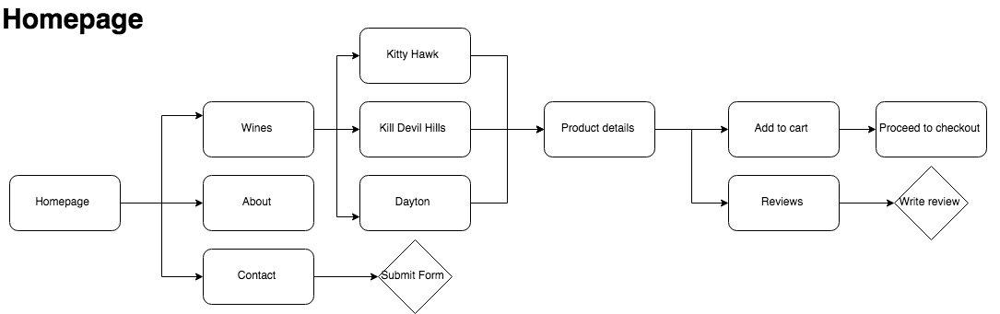

Competitive analysis
An analysis was completed to evaluate the strategies of Cupcake Wines, the Prisoner Wine company and Cirq Wine along with their strengths and weaknesses. We found a niche area where we could emphasize the homemade, small batch aspect of the wine at a good price point. We wanted to focus on quality while retaining a price point below more expensive wines.
User Personas
I created three user personas based on the research, which gave insight into the user’s intentions and goals while also expressing their frustrations. Ruth wants a quicker option to purchase wine rather than going to the store but would also like to trust the quality of brand. Abe typically finds online shopping to be a hassle and would like a simpler experience. Cam enjoys wine but can never tell if the wine he’s ordering online is going to be good.
User Stories and Flows
User stories and flows helped to solidify the architecture of the site. With a solid skeleton framework in place, a more robust site structure started to develop.
Branding
Before designing the logo, the color palette and typography was chosen to give the brand a distinct identity. Nova Round was selected for the headlines for its rounded edges, which mirrored the roundness of grapes and also gave the font a vintage feel to keep in line with the brand story. Lora was selected for the body for its balance and readability. The color palette was chosen to reflect the University of Dayton’s color scheme, which is the city the Wright brothers were born in. Blue, Red and Gold gave the brand an elegant scheme while retaining the vintage vibe.
#333333
#F4F4F4
#213955
#5C0000
#AE8F66
#FFFFFF

Logo
The logo began with pencil and paper and after many hours of trial and error, moved to digital renderings. I paired a minimalistic grape cluster with clean wing designs to retain the simple and vintage theme. The logo is easily scalable and works with multiple color schemes.
Wireframes
I created the low-fidelity wireframes and then tested the designs for usability. Once I had the optimized designs, I continued to gather user feedback by utilizing navigation and preference tests. The users felt the site was too crowded so I tweaked the design of the homepage and the product detail page to allow for more space. After the structure of the site was finalized, I moved into high-fidelity mockups.
Mockups
The site uses primarily picture based images from the early 1900’s to showcase the vintage theme and story around the Wright brothers first flights and also the story behind the creation of the wine. Additional illustrations were added to the product detail page to highlight the quality of the wine. After adding color and images, I created a clickable prototype on InVision and continued user testing to improve the user experience.

Prototype

Conclusion
The results showed that the users were able to view the product details with ease. The cart and checkout process was made simple and straightforward based on user feedback, which created a seamless user experience.
This project presented a unique challenge as I had never created a brand guide before. A lot of focus was put on building the brand’s story and being able to present a cohesive and clear message across all channels.
In the end, the brand had a unique and consistent story that differentiated itself from the competitors. The work on the front end unified the brand story with the user experience, which had a positive impact on how users interacted with the brand and the site.